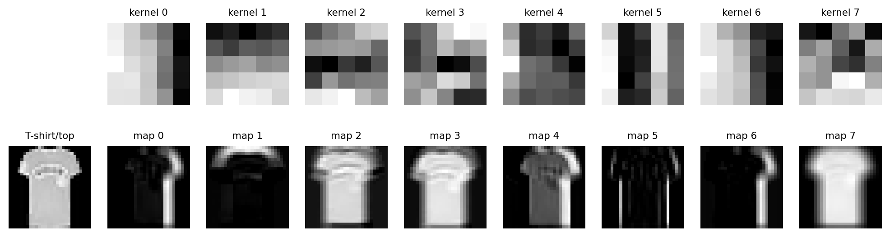

교수자 메모 (실습본에는 없음). 60분 운영: 준비 3분 → 1절 이중 for문과 2채널 예제 12분 → 2절 F.conv2d 대조 6분 → 3절 출력 크기·파라미터 8분 → 4절 데이터와 CNN 모양 8분 → 5절 학습·평가 함수와 학습 13분 → 📝 과제 10분. ✅ 숫자: 2채널 예제 [[6, 7], [3, 6]] · 출력 크기 (32,5,2,2)→16 · Conv2d(3→128,k=3) 3,584 vs Linear 393,344 · CNN 235개 · 배치 (128, 1, 28, 28) · 테스트 정확도 약 0.89.
# ▶ 준비 셀 — 그대로 실행하세요. 옷 사진 데이터를 내려받습니다.import numpy as npimport torchimport torch.nn as nnimport torch.nn.functional as Fimport matplotlib.pyplot as pltfrom torchvision import datasets, transformsfrom torch.utils.data import Dataset, DataLoaderfrom sklearn.model_selection import train_test_splitnp.set_printoptions(linewidth=140)torch.manual_seed(42)tr_full = datasets.FashionMNIST(root='../data', train=True, download=True, transform=transforms.ToTensor())te_full = datasets.FashionMNIST(root='../data', train=False, download=True, transform=transforms.ToTensor())print("준비 완료!")
준비 완료!
✅ 준비 완료!가 나오면 됩니다.
1. 콘볼루션은 곱해서 더하며 한 칸씩 옮기는 것
커널을 이미지 위에 놓고, 겹친 칸끼리 곱해서 모두 더한 값을 하나 적습니다. 커널을 한 칸 옮겨 반복합니다. 이것을 이중 for문으로 그대로 옮깁니다. x[:, i:i+KH, j:j+KW]는 커널과 같은 크기로 잘라 낸 입력 조각이고, 채널이 여러 개면 모든 채널의 곱을 한꺼번에 더합니다. 빈칸을 채웁니다.
✅ 체크포인트 — 출력이 [[6. 7.] [3. 6.]]이면 맞습니다. 이론 6장의 손계산과 같은 값입니다.
💬 결과 해설 — 입력 (2, 3, 3)에 커널 (2, 2, 2)를 적용하니 특성 맵은 2×2 한 장입니다. - 왼쪽 위 칸 6은 채널 1의 \(1\cdot1+0\cdot0+0\cdot0+1\cdot1=2\)와 채널 2의 \(0\cdot0+1\cdot1+2\cdot1+0\cdot0=3\)을 더하고 편향 1을 더한 것입니다. - 채널별 결과는 따로 쌓이지 않고 더해져서 한 장이 됩니다.
2. F.conv2d와 대조
PyTorch의 콘볼루션은 배치 단위로 계산하므로 입력은 (N, C, H, W), 커널은 (출력 채널 수, 입력 채널 수, KH, KW)여야 합니다. unsqueeze(0)으로 맨 앞에 축을 하나 더합니다.
💬 결과 해설 — 두 번째 경우는 \((32-5+4)/2 = 15.5\)를 버려서 15, 거기에 1을 더해 16입니다. 반올림하면 답이 같아 보이지만 과정이 틀립니다. P = (K-1)/2로 두면 입력과 출력 크기가 같아지는데, 이때 커널 크기가 홀수여야 \(P\)가 정수입니다.
커널 하나의 파라미터는 \(C_{\text{in}} \times K \times K\)개에 편향 1개이고, 커널이 \(C_{\text{out}}\)개면 그 배입니다. 5-1의 Linear와 비교합니다.
💬 결과 해설 — 같은 128개의 출력을 만드는데 콘볼루션은 커널 (128, 3, 3, 3)에 편향 128개, 합쳐서 3,584개이고 완전연결층은 393,344개입니다. - 콘볼루션의 파라미터 수에는 이미지 크기가 들어가지 않습니다. 커널 하나가 모든 위치를 돌아다니며 같은 가중치를 쓰기 때문입니다. - 사진이 224×224가 되어도 3,584개 그대로입니다.
4. 옷 사진 세 종류와 작은 CNN
FashionMNIST에서 티셔츠(0), 바지(1), 앵클부츠(9)만 골라 클래스당 1,500장을 쓰고, 정답 번호를 0, 1, 2로 다시 매깁니다. 실습 4처럼 훈련·검증·테스트로 나눕니다. 고르는 코드는 이번 주의 패턴이 아니므로 그대로 실행합니다.
# ▶ 그대로 실행하세요 — 세 클래스만 고른 훈련·검증·테스트 로더KEEP = [0, 1, 9]NAMES = [tr_full.classes[i] for i in KEEP]remap = {c: i for i, c inenumerate(KEEP)}class Picked(Dataset):def__init__(self, base, idx):self.base, self.idx = base, idxdef__len__(self):returnlen(self.idx)def__getitem__(self, i): x, y =self.base[int(self.idx[i])]return x, remap[y]y_tr_all = np.array(tr_full.targets)y_te_all = np.array(te_full.targets)pool = np.concatenate([np.where(y_tr_all == c)[0][:1500] for c in KEEP])tr_idx, va_idx = train_test_split(pool, test_size=0.2, random_state=42, stratify=y_tr_all[pool])te_idx = np.concatenate([np.where(y_te_all == c)[0] for c in KEEP])torch.manual_seed(42)train_loader = DataLoader(Picked(tr_full, tr_idx), batch_size=128, shuffle=True)val_loader = DataLoader(Picked(tr_full, va_idx), batch_size=256)test_loader = DataLoader(Picked(te_full, te_idx), batch_size=256)print(NAMES)print(len(tr_idx), len(va_idx), len(te_idx))
💬 결과 해설 — 출력은 (128, 3)입니다. 학습 전이라 예측 클래스가 정답과 거의 맞지 않고, 128장 중 맞힌 수가 33장입니다. 이 “맞힌 수 ÷ 전체”가 정확도입니다.
학습 함수는 실습 4의 것과 같습니다. 다시 씁니다.
# ✍️ 직접 입력def train_one_epoch(model, loader, criterion, optimizer): model.train() total =0.0 n =0for xb, yb in loader: optimizer.zero_grad() pred = model(xb) loss = criterion(pred, yb) loss.backward() optimizer.step() total += loss.item() *len(yb) n +=len(yb)return total / n
평가 함수는 실습 4의 것에 맞힌 수를 세는 줄이 더해집니다. 손실과 정확도 두 값을 돌려줍니다. 빈칸을 채웁니다.
# ✍️ 빈칸(___)을 채운 뒤 실행하세요#* def evaluate(model, loader, criterion):#* model.eval()#* total = 0.0#* correct = 0#* n = 0#* with torch.no_grad():#* for xb, yb in loader:#* out = model(xb)#* total += criterion(out, yb).item() * len(yb)#* correct += (___ == yb).sum().item() # 예측 클래스가 정답과 같은 수#* n += len(yb)#* return total / n, correct / n#*#* print(evaluate(cnn, val_loader, criterion))def evaluate(model, loader, criterion): model.eval() total =0.0 correct =0 n =0with torch.no_grad():for xb, yb in loader: out = model(xb) total += criterion(out, yb).item() *len(yb) correct += (out.argmax(1) == yb).sum().item() n +=len(yb)return total / n, correct / nprint(evaluate(cnn, val_loader, criterion))
(1.1021261670854356, 0.3333333333333333)
💬 결과 해설 — 학습 전 검증 손실 약 1.10, 정확도 약 0.33입니다. 세 클래스를 무작위로 찍으면 0.33이므로 아직 아무것도 배우지 못한 상태입니다.
💬 결과 해설 — 검증 손실이 매 에폭 내려가고, 정확도는 오르내리며 약 0.43에서 0.90로 올라갑니다. 학습 코드는 실습 3의 다섯 줄 그대로이고, 입력의 모양만 표에서 이미지로 바뀌었습니다.
테스트 세트로 한 번 평가합니다.
# ✍️ 직접 입력test_loss, test_acc = evaluate(cnn, test_loader, criterion)print(test_acc)
0.8923333333333333
✅ 체크포인트 — 약 0.89면 맞습니다. 파라미터 235개로 세 종류의 옷을 열에 아홉 가까이 맞힙니다.
커널 8개는 사람이 정한 값이 아니라 학습으로 얻은 값입니다. 첫 층의 가중치를 꺼내 그림으로 보고, 사진 한 장을 통과시켜 각 커널이 어디에 반응하는지 봅니다.
# ▶ 그대로 실행하세요 — 학습된 커널 8개와 특성 맵 8장kernels = cnn[0].weight.detach().numpy()sample, sample_label = Picked(te_full, te_idx)[0]with torch.no_grad(): fmaps = torch.relu(cnn[0](sample.unsqueeze(0)))[0].numpy()fig, axes = plt.subplots(2, 9, figsize=(13, 3.4))axes[0, 0].axis('off')axes[1, 0].imshow(sample[0], cmap='gray')axes[1, 0].set_title(NAMES[sample_label], fontsize=8)for i inrange(8): axes[0, i +1].imshow(kernels[i, 0], cmap='gray') axes[0, i +1].set_title(f'kernel {i}', fontsize=8) axes[1, i +1].imshow(fmaps[i], cmap='gray') axes[1, i +1].set_title(f'map {i}', fontsize=8)for ax in axes.flat: ax.axis('off')plt.show()

💬 윗줄이 커널, 아랫줄이 그 커널을 통과한 특성 맵입니다. 커널마다 밝은 곳이 다릅니다. 어떤 커널은 윤곽에, 어떤 커널은 넓은 면에 반응합니다. 사람이 정해 준 적이 없는데 데이터만 보고 그렇게 정해졌습니다.
6. 실습 과제 (10분)
📝 과제 1 · 세로 에지 커널
왼쪽 두 열이 10, 나머지가 0인 5×5 흑백 이미지에 이론 6장의 세로 에지 커널 [[1, 0, -1], [1, 0, -1], [1, 0, -1]]을 1절의 함수로 적용합니다. 출력 크기와 값이 큰 위치를 먼저 예상합니다.
# 📝#> 힌트: 이미지는 np.zeros((1, 5, 5), dtype=np.float32)를 만든 뒤 img_e[0, :, :2] = 10으로 왼쪽 두 열을 채웁니다. 커널은 1절의 k2처럼 (1, 3, 3) 모양의 np.array입니다. conv2d_naive(img_e, k_e)를 출력합니다.img_e = np.zeros((1, 5, 5), dtype=np.float32)img_e[0, :, :2] =10k_e = np.array([[[1, 0, -1], [1, 0, -1], [1, 0, -1]]], dtype=np.float32)print(conv2d_naive(img_e, k_e))
[[30. 30. 0.]
[30. 30. 0.]
[30. 30. 0.]]
✏️ 나의 답: 출력 크기 , 값이 큰 열
예시 답: 출력은 3×3이고 첫 두 열이 30, 셋째 열은 0입니다. 커널의 왼쪽 열이 밝은 칸(10)에 걸치고 오른쪽 열이 어두운 칸(0)에 걸치는 두 위치에서 값이 나오고, 커널 전체가 어두운 칸에 놓이는 셋째 열은 0입니다. 균일한 곳에서는 +와 −가 상쇄되어 0입니다. 값이 큰 곳이 밝음에서 어두움으로 바뀌는 경계입니다.
📝 과제 2 · 커널이 2개뿐이면
Conv2d(1, 8, ...)의 커널 수를 2로 바꾼 CNN을 같은 방식으로 8 에폭 학습시켜 테스트 정확도를 봅니다. 파라미터 수도 셉니다.
# 📝#> 힌트: 4절의 nn.Sequential을 그대로 쓰되 Conv2d(1, 2, ...)와 마지막 Linear(2, 3)으로 바꿉니다. optimizer도 새 모델로 다시 만들고, 5절의 8 에폭 반복문과 evaluate(…, test_loader, …)를 그대로 씁니다. 파라미터는 5*5*1*2+2 + 2*3+3입니다.torch.manual_seed(42)cnn2 = nn.Sequential( nn.Conv2d(1, 2, kernel_size=5, padding=2), nn.ReLU(), nn.MaxPool2d(2), nn.AdaptiveAvgPool2d(1), nn.Flatten(), nn.Linear(2, 3),)optimizer = torch.optim.Adam(cnn2.parameters(), lr=0.01)for epoch inrange(8): train_one_epoch(cnn2, train_loader, criterion, optimizer)print(5*5*1*2+2+2*3+3, evaluate(cnn2, test_loader, criterion)[1])
61 0.5293333333333333
커널 수
파라미터 수
테스트 정확도
2
✏️
✏️
8
235
0.89
예시 답: 파라미터 61개, 테스트 정확도 약 0.53. 커널이 2개면 찾을 수 있는 특성이 두 가지뿐이라 세 종류를 가르기 어렵습니다. 커널 수는 “몇 가지 특성을 찾을 것인가”를 정하는 하이퍼파라미터입니다.
📝 과제 3 · 생각해 보기
3절에서 Conv2d(3, 128, k=3)의 파라미터 수에 이미지 크기가 들어가지 않았습니다. 그렇다면 사진이 커질 때 콘볼루션 층에서 커지는 것은 무엇일까요? 4절의 모양 출력을 근거로 한두 문장으로 적습니다.
✏️ 나의 답:
예시 답: 파라미터는 그대로지만 출력 특성 맵의 크기(H, W)가 사진과 함께 커집니다. 4절에서 28×28 입력이 8×28×28 특성 맵이 되었듯이, 224×224 입력이면 8×224×224가 되어 계산량과 메모리가 커집니다. 그래서 풀링으로 크기를 줄입니다.
✅ 정리
배운 것
핵심
콘볼루션
조각과 커널을 곱해서 더하며 한 칸씩 이동. 채널별 결과는 더해져 한 장. 2채널 예제 [[6, 7], [3, 6]]
F.conv2d
입력 (N, C, H, W), 커널 (C_out, C_in, KH, KW). C_in은 입력 채널과 같아야 함
출력 크기
(N - K + 2P) // S + 1. (32, 5, 2, 2) → 16. same 패딩은 P = (K-1)/2
파라미터 수
커널 하나 C_in·K·K + 1. Conv2d(3→128, k=3) 3,584개, 이미지 크기와 무관
작은 CNN
Conv2d(1→8, k=5) → ReLU → MaxPool → 평균 → Flatten → Linear(8→3). 235개, 테스트 정확도 약 0.89
분류 학습
CrossEntropyLoss, argmax(1)이 예측 클래스, 맞힌 수 ÷ 전체가 정확도. 학습 다섯 줄은 실습 3·4와 같음
다음:실습 6에서는 오늘 지나친 풀링을 다루고, 콘볼루션 층을 여러 개 쌓아 컬러 사진을 분류합니다.